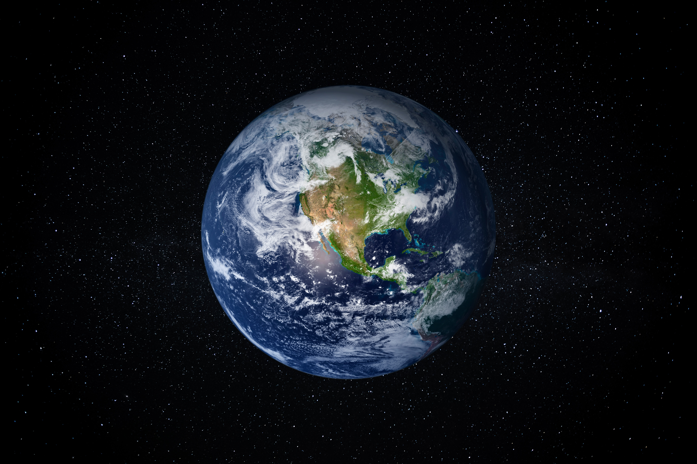

When I was a child I had very different priorities than I do now.
My concerns in life were:
- Getting done with homework so I could play with friends
- Being home in time for dinner.
- Note: This one depended on what we were having for dinner.
- And, most important to me at the time, contemplating the awesomeness of space.
I wanted to be an astronaut and be one of the lucky few to see this view with their own eyes.

Time has changed many things, but even now I still can't help but look up each night in wonder how it all must look from up there.
Are our problems as specks of dust below us? Or are we confronted with a frightening landscape, realizing how truly small and vulnerable we are.
However we may feel, the truth is, as the late Steven Hawking remarks in the below video, "The universe is a violent place."
I invite you to watch the below video to hear more of his words, and some of the interesting work some individuals are doing to make interstellar travel a reality.
Just as Steven said, space is so important because it gives us perspective and pushes us to use our imaginations, learn, and embrace our inner nature as explorers.
We do not know what the future holds. Nor can we count on things or expect things to stay the same forever.
We must continue looking up, dreaming, and imagining new possibilities.
That is the future.
That is how we, as humanity, will survive.
For fun I have included an interactable Tableu graphic with various facts regarding NASA astronauts and their qualifications.
Thank you for visiting my website!